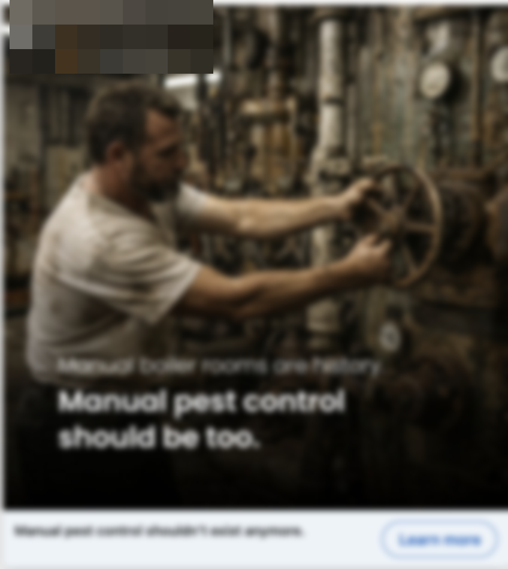
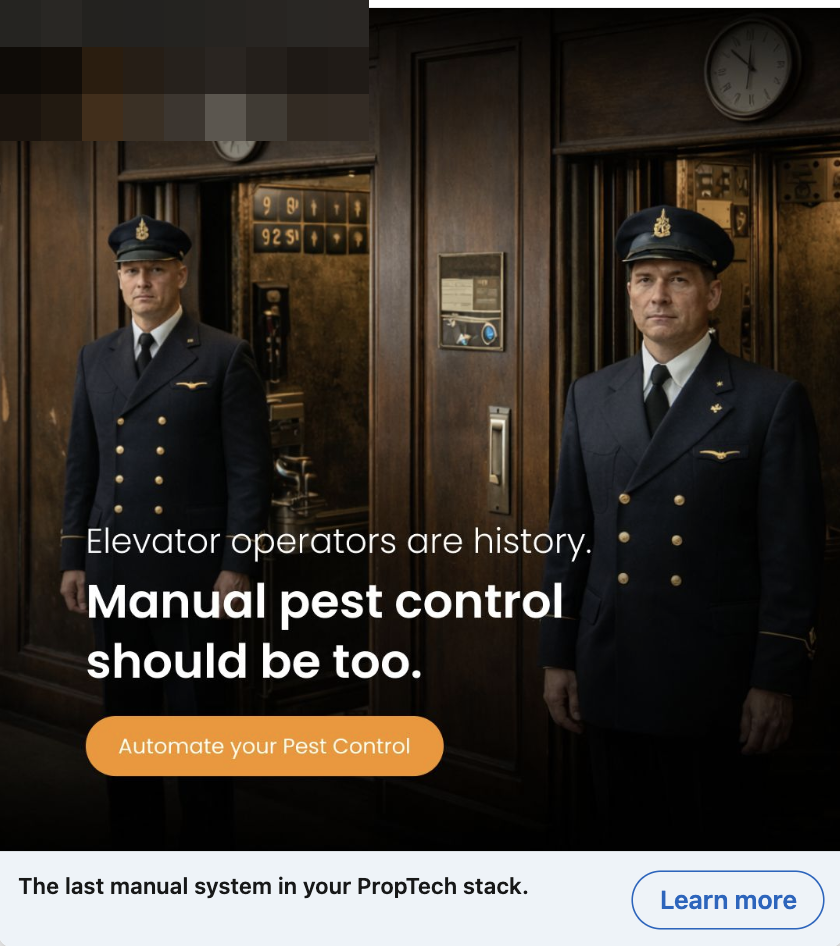
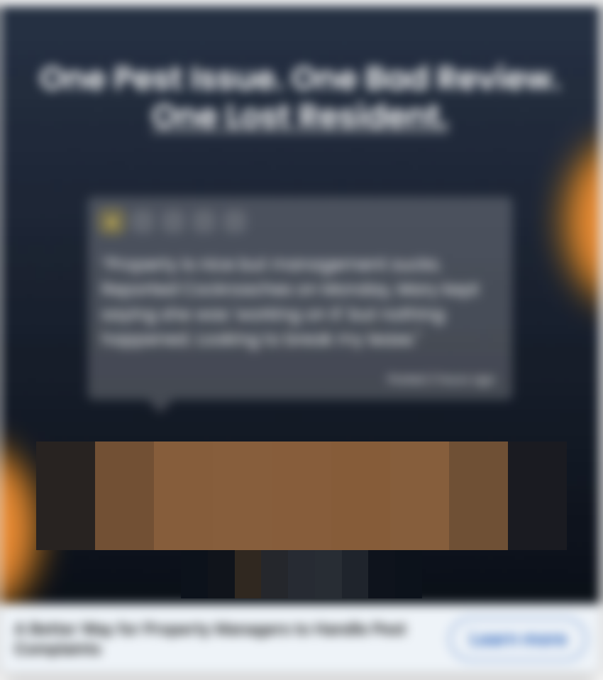
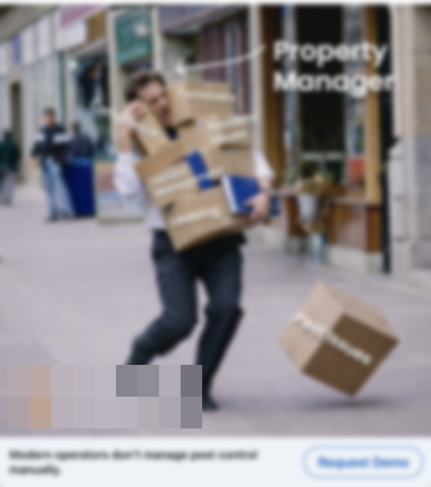
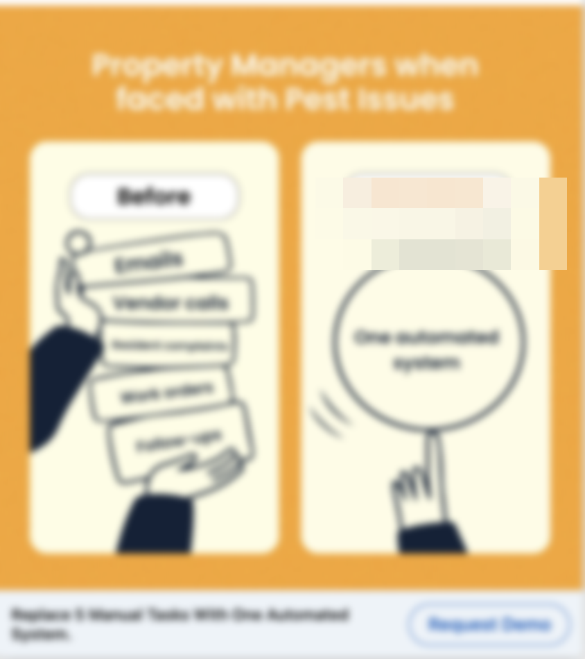
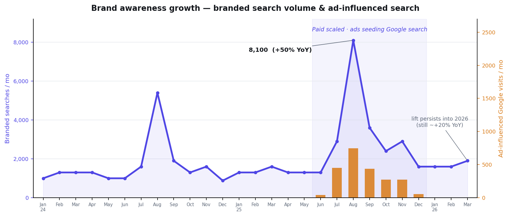
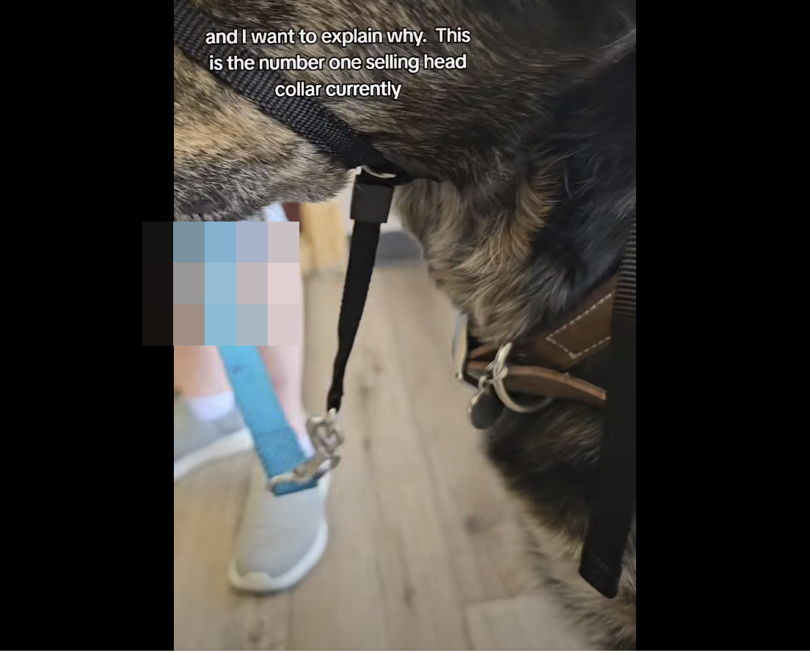

Find where the real leverage is. Point positioning and creative at it. Then measure what's actually working, not what the platform claims credit for.
I started as the only marketer for early-stage founders, doing everything from content and paid media to email, lifecycle, and CRO, before moving into agency strategy across a portfolio of B2B SaaS and growth brands. My edge is the blend of hard data and human behavior. The client work is in the tabs above.
An AI-driven research pipeline finds the real leverage before a dollar is spent: category demand, share of search, the language buyers use.
Even in a category with no felt pain, the job is to build demand: make the old way feel obsolete rather than agitate a problem buyers don't know they have.
Multi-channel execution held to backend outcomes and multitouch truth, not platform-reported ROAS. Built from scratch when it has to be.
Run real holdout and landing-page tests, form sharp hypotheses, and accept the answer even when it's null. Then harvest the upside the test surfaces along the way.
B2B2C PropTech: pest control repositioned as a revenue amenity. Took over post-$28M raise; scaled monthly spend ~$6k → ~$14k (~2.5×).
The hard part: the category had no active pain. Property managers weren't searching for a fix because they didn't know one existed, the same way no one searched for a smartphone while they still had a flip phone. So rather than agitate a pain point, we built demand: aspirational, attention-led creative that makes manual pest control feel obsolete, plus early-stage lead magnets to capture interest before buyers were in-market. I also widened the channel mix beyond Meta, adding Bing and a dedicated property-management-conference campaign to reach more of the buyer base.





Angles and concepts I developed and briefed; produced with the creative team. (LinkedIn paid, 2026.)
B2B SaaS, concussion & balance testing (since acquired). A long, highly seasonal cycle, fall sports.
Because the category is so seasonal, I judge the account on full-year, year-over-year, inbound-only numbers, which isolate what marketing drove from the sales team's outbound. What made the growth real rather than seasonal: I optimized to backend closed-won, not front-end signups, and we built a "Meta-Influenced Google Traffic" signal to measure the cross-channel halo. It showed Meta was seeding branded search, not just driving last-click conversions. The multitouch picture, instrumented.
The point of building the "Meta-Influenced Google Traffic" signal was to test whether paid was creating demand, not just harvesting it. It was. As we scaled and Meta seeded Google searches, the brand's branded search volume stepped up sharply year-over-year: August grew +50% (5,400 to 8,100). Its share of search against the category leader climbed to a sustained ~28–29% in H2 2025, its high for the period, from the high-teens/low-20s before. And it stuck: branded search held elevated into early 2026 (still ~+20% YoY through Q1) before normalizing in the off-season.

Branded search volume (line) vs. ad-influenced Google visits (bars). Year-over-year framing isolates the lift from the category's fall-sports seasonality. Search data via DataForSEO, through 2026.
B2B commercial facilities services: a demand engine built from zero.
A brand-new account with nothing live. I built and launched the site and a landing page per service line (janitorial, snow & ice, asphalt, landscaping), then ran a lead-quality-over-volume playbook. The specific moves:
DTC pet-training tools, scaled ~$30k → ~$60k/month on the way to its first $1M year. The growth ceiling: reaching new audiences.
My challenge here was reaching new audiences, which meant measurement had to be honest about what new spend was really doing. It was one of the first accounts we ran on TripleWhale, and I made the calls on first-touch attribution over last-touch, always reading first-vs-last together to tell the creatives that drive discovery from the ones that just close demand we already had. We also tested Meta's incremental-attribution setting here, which drove decent results.

DTC, customizable beauty palettes (a UK startup I took from launch to £15k+/month in 6 months). Turning good clicks into purchases.
The ads worked (good CPCs on Google), but only ~1.5% of clicks converted. We ran single-keyword-intent ad groups ("design your own palette," "create your own palette," "customize…"), each with copy matched to the search term. The catch: no matter which ad they clicked, everyone landed on the same generic "Customizable makeup palettes" homepage.
The insight: if matching ad copy to the keyword is best practice, why stop at the click? In VWO, I built UTM-driven personalized homepage variants: the headline and every CTA button swapped to mirror the ad ("Design," "Create," "Customize"), so the message carried unbroken from search term to ad to landing page.
A language school selling English courses to students planning a move to Canada. A "how much more could you earn?" calculator as the lead magnet.
The hook was an earnings calculator: enter your salary, age, and country, and it estimated how much more you'd make after learning English. Clicks were cheap (~$0.04 CPC), but the calculator converted at just 0.24%, a CPL of $17.09, well below where it needed to be. I believed in the concept, so I set out to fix the page rather than scrap it.
Something I built that changed how the whole agency does strategy.
Good strategy starts with the market, not the channel. But research was the slowest, most inconsistent part of every engagement. So I built an AI-driven research pipeline that turns raw market signals into a deep intelligence brief: category demand and growth, share of search vs. competitors, demand trends, audience and voice-of-customer, and a competitive messaging map. What took weeks of manual work became a repeatable system that produces a ~200-page brief and points straight at the leverage.
Happy to walk through a full (anonymized) brief on the call.